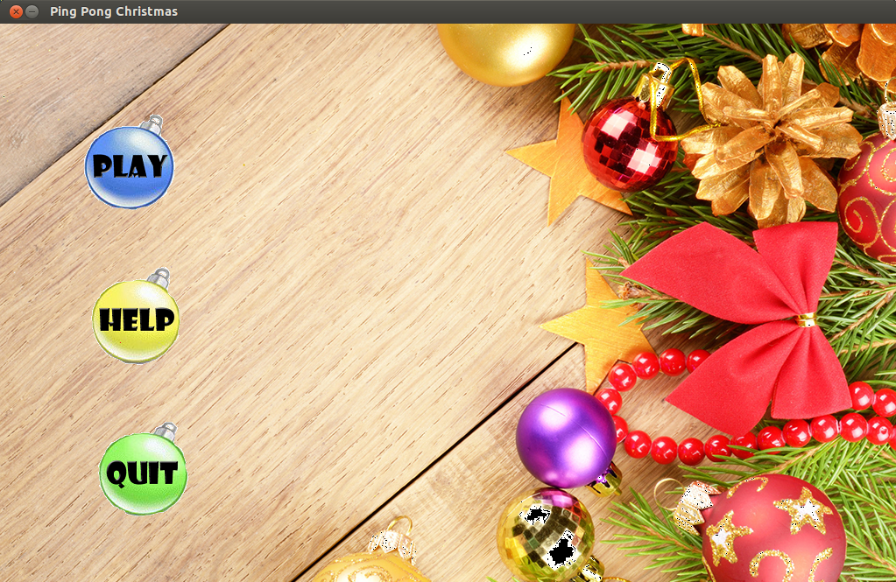
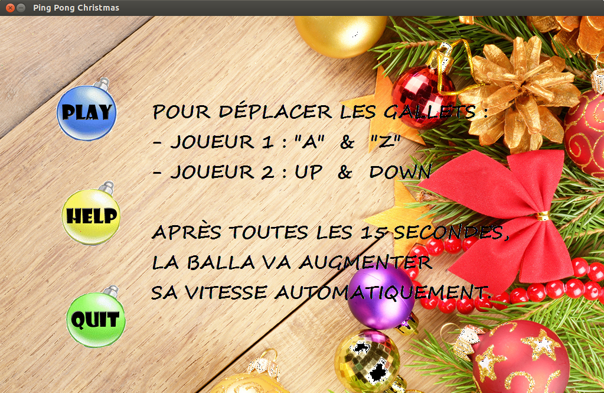
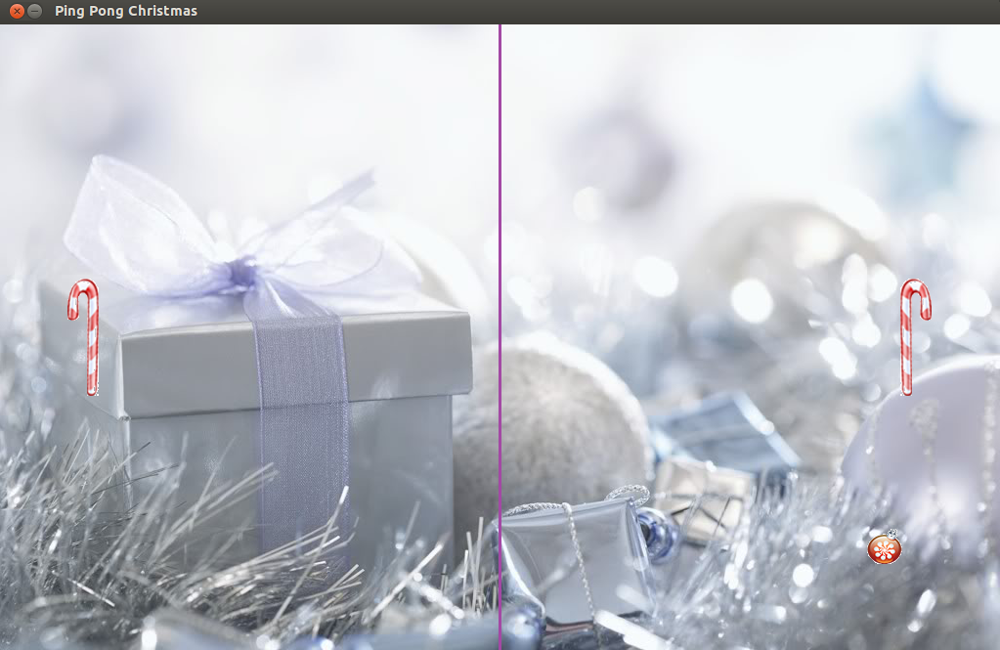
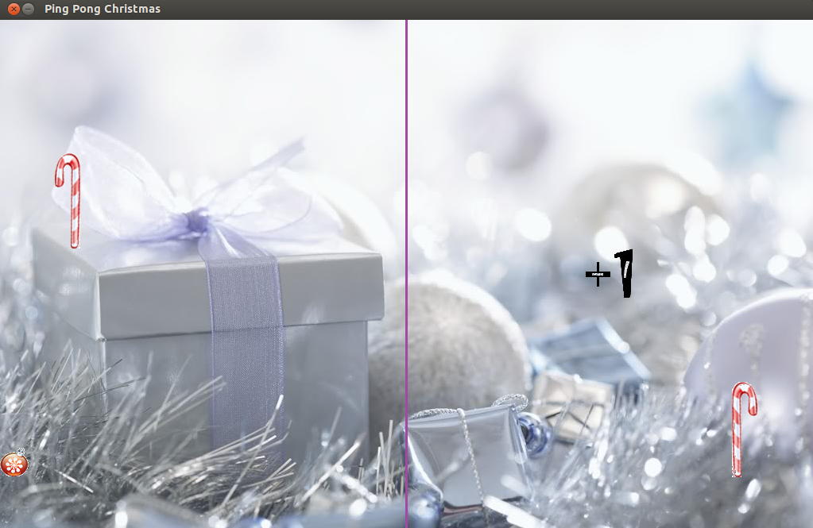
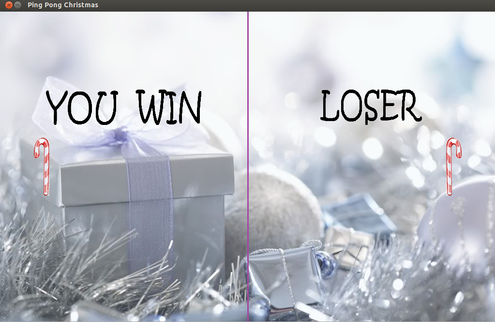

A propos du jeu,
Ping Pong est un jeu inspire par le tennis a table. Depuis son apparition, il devient un des jeux les plus preferes dans le monde entier.
Au debut, nous avons deja programe une version de Ping Pong qui marche dans Terminal. Bien que la presentation graphique de l'ancienne version se montre ennuyante (car on n'utlise que les caracteres 'o', 'H' pour la balle et les gallets), c'est une base importante pour que nous nous habituions a la programmation et que nous soyons plus competents, plus confidents a notre capacite.
Maintenant, au moyen de la librairie SDL, tout devient plus attirant, plus interessant, et plus complique. Nous devrons nous apprendre a bien manipuler le SDL (sans renseignements des professeurs, ca nous est un peu dur). En fait, apres avoir fait des etudes, le SDL s'avere simple a utiliser, et bien qu'il soit "simple", les fonctions de cette librairie nous ont aide beaucoup durant la creation du jeu (l'affichage des images, le delai du temps,...).
Pour le jeu, notre groupe a choisi le theme Noel, voici quelques captures de l'ecran :
Le menu
L'instruction, mieux vaut la lire avant de jouer
L'interface du jeu
Oh la la vous avez gagne. 1 point pour vous !
Et alors le resultat apres 3 tours de jouer
Merry Christmas and Happy New Year